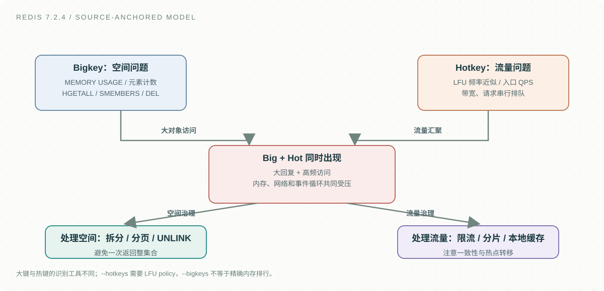
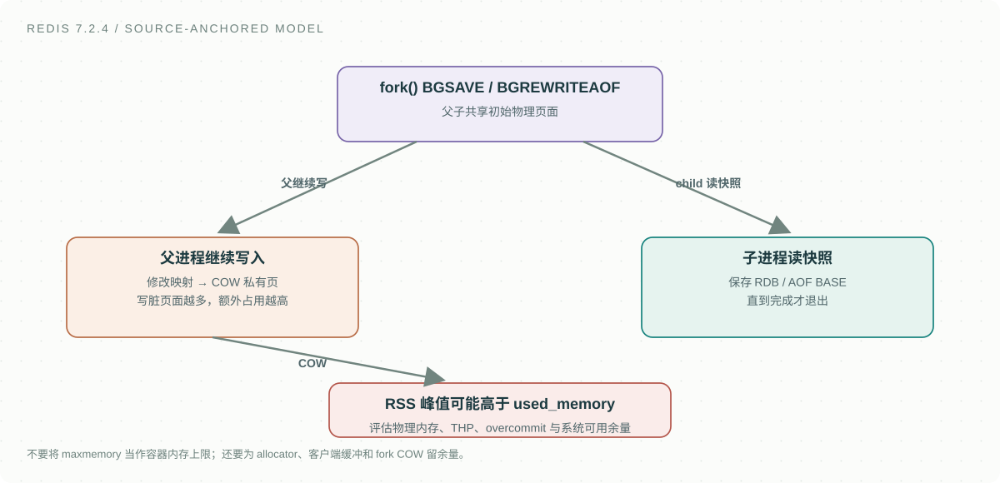
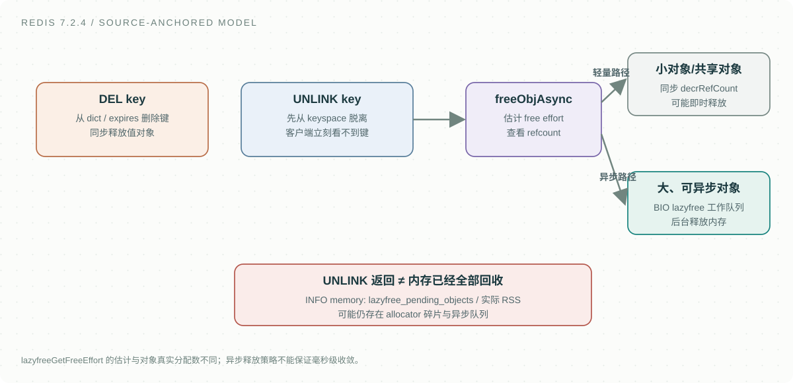

Chapter 24 / Redis 7.2.4 Source Anatomy
生产故障排查：大键、热点、COW 与内存压力
沿 Redis 7.2.4 的 MEMORY USAGE、LFU、lazyfree、fork/COW 和 maxmemory 路径，分辨 Bigkey、Hotkey、Redis OOM 与系统 OOM，给出安全的排障顺序。
生产故障先分类：慢、满、丢连接、写入拒绝
Redis 生产故障常表现为 P99 突增、内存到顶、写命令 OOM、客户端超时、主从复制反复全量同步或连接数飙升。相同的业务错误码背后可能是不同层的问题：大对象导致事件循环处理慢、热 key 造成单点负载、AOF/RDB fork 的 COW 造成物理内存高峰、网络问题造成慢副本回压等。
排障第一步不应直接改 maxmemory 或执行 FLUSHALL。先固定实例版本、时间窗口和现象；收集 INFO stats/memory/clients/persistence/replication、SLOWLOG、LATENCY LATEST 与服务器/系统日志，确认到底是执行瓶颈、容量瓶颈还是网络路径问题。下面将症状映射到可检查的源码机制。
Bigkey：大对象数量、字节数与全量遍历复杂度
Bigkey 既可以是包含数百万成员的 Hash/Set/Sorted Set，也可以是很长的 String。不同数据类型的“大”并非同一个数值：STRLEN 是字符串字节数，HLEN 是 Hash field 数量，SCARD 是 Set 基数，LLEN 是 List 长度，ZCARD 是有序集合成员数。成员数量不能直接等同于对象内存占用。
redis-cli --bigkeys 基于增量 SCAN 估算不同类型的“大 key”并收集最大元素计数/长度，不是按真实 allocator 字节精确排序；MEMORY USAGE key SAMPLES 0 由 objectComputeSize() 计算该 key 的估计字节开销，使用全部成员取样可能非常昂贵，应先基于默认抽样估计再选择性深入。对于不断修改的数据集，SCAN 可能返回重复 key，也无法提供全局事务一致快照。
大对象不仅占内存，也会放大 HGETALL、SMEMBERS、LRANGE 0 -1 等返回完整集合的 CPU 与网络成本。更稳妥的治理通常是数据结构拆分、按范围查询、分页/游标以及限制单 key 的最大成员数，而不是盲目增加服务器内存。

Hotkey：访问频率集中不一定意味着占用大
一个长度仅几十字节的 key 也可能在极高 QPS 下成为热点。它带来的主要问题是单节点 CPU、网络吞吐、回复缓冲、连接调度与下游依赖的集中负载。在 Redis 7.2.4 使用 allkeys-lfu/volatile-lfu 时，对象的紧凑 LFU 计数器提供近似访问频率；CLI 的 --hotkeys 模式依赖 LFU policy，不能在默认 noeviction 模式下凭空得到精确热度排行。
LFU frequency 本身也不是准确的 QPS 计数：源码里 LFULogIncr() 使用概率递增，LFUDecrAndReturn() 按时间衰减，OBJECT FREQ key 是一个紧凑的估计指数。需要把它与客户端访问日志、网关指标和请求路径一起核对。
热点治理可采用请求合并、读副本分担、应用本地缓存、业务限流、按实际访问语义拆 key 等方式。若使用副本分担读，必须考虑异步复制延迟；若进行 hash tag 拆分，必须重新评估多 key 原子性和分片一致性。
交互为离线机制模型；不会读取 Redis 实例或提供真实压测数据。
fork、THP 与 COW：为什么 used_memory 正常而 RSS 撑爆？
BGSAVE 和 BGREWRITEAOF 可能调用 redisFork() 创建子进程。fork 后子进程和父进程最初共享页面；父进程在子进程运行时写脏页面才会触发 Copy-on-Write。写入量大、数据页分散或子进程持续时间长时，额外物理页占用可能非常高。Linux 的透明大页 THP 还可能增大相关 COW 成本和延迟。

Redis 的 maxmemory 是内部可计入内存的策略阈值，不是 Linux 进程 RSS 的硬上限。used_memory_rss 还包含 allocator 常驻页、代码段、线程栈、共享内存相关计量与其他开销。Redis 7.2.4 提供 latest_fork_usec、rdb_last_cow_size、aof_last_cow_size 等 INFO 指标帮助确认 fork 成本，但它们记录的是不同阶段，不能简单相加为一次完整的峰值内存。
在 Linux 上应先只读检查 cat /sys/kernel/mm/transparent_hugepage/enabled 与 sysctl vm.overcommit_memory。关闭 THP 或调整 overcommit 是操作系统级变更，需要运维批准和变更窗口，本文不提供可直接复制到生产运行的危险修改命令。
OOM、eviction 与碎片：先弄清哪个数字触达上限
当 maxmemory 超限，getMaxmemoryState() 会从 used memory 中扣除部分 AOF/replication buffer，以避免淘汰自身反复生成传播流的反馈循环。随后 performEvictions() 按 maxmemory-policy 尝试删除候选；若是 noeviction 或没有可选候选，写命令可能报 OOM。该 OOM 与操作系统内核 OOM-killer 终止进程不同：前者是 Redis 拒绝写入，后者意味着进程可能直接消失。
mem_fragmentation_ratio 是粗略比值，受到小数据集、进程其他开销及 allocator 保留页影响。不能据此一句话断言“内存泄漏”。还应查看 allocator_allocated、allocator_active、allocator_resident 和 used_memory_rss，并对比内存的变化趋势。
| 症状 | 优先区分 | 可能证据 |
|---|---|---|
| 写命令返回 OOM | Redis 自身的 maxmemory 规则 | maxmemory、policy、evicted_keys、used_memory |
| 进程被系统终止 | 容器/主机 OOM killer | dmesg、cgroup memory.events、宿主机日志 |
| RSS 高但 used_memory 低 | allocator 碎片或 COW/其他 RSS | allocator_*、fork 指标、内核 THP |
| 复制反复 FULLRESYNC | backlog 失效或慢副本回压 | sync_partial_err、客户端输出缓冲与日志 |
大 key 删除：UNLINK 的“异步”是有条件的
DEL 删除键时通常在主线程同步释放底层对象，复杂的 Hash、Set、ZSet 或 List 可能使一次删除操作占用显著 CPU 时间。UNLINK 会从 keyspace 同步摘除键并优先通过后台 lazyfree 释放值，但 Redis 7.2.4 的 freeObjAsync() 会先调用 lazyfreeGetFreeEffort() 估计对象释放工作量；只有超过阈值且引用条件允许时，才把释放动作交给 BIO worker，其余情况仍同步减少引用计数并释放。

UNLINK 返回 1 表示从 keyspace 成功移除该 key，不代表操作系统 RSS 在这个时刻已经下降。可以用 lazyfree_pending_objects 观察异步释放队列，并检查后续 RSS 与 allocator resident。若对象本来就是只占一个分配块的压缩编码，UNLINK 不一定更快；并行分配与引用共享也会影响回收。
从故障症状到可执行的止血顺序
生产事故处理应先保护数据与可恢复性，再治理性能。对于 P99 突增，应先看 SLOWLOG 与 LATENCY，再将最近一次 BGSAVE/AOF rewrite、网络流量和大/热 key 的证据按时间排列。对于内存逼近上限，先判断 Redis OOM 还是宿主 OOM，再分析增长来自数据、输出缓冲、复制 backlog、allocator 还是 COW。
可能的止血操作有调低请求并发、限制异常路由、应用侧熔断、暂停非必要全量扫描、先备份再拆大 key。变更 maxmemory policy 或扩大内存需核验业务缓存淘汰预期；强制杀死后台子进程、删除 AOF 目录或清空数据库都可能使恢复能力下降，不应作为默认第一步。
| 一线症状 | 首批只读命令 | 不要立刻做 |
|---|---|---|
| 慢 | INFO stats、SLOWLOG GET、LATENCY LATEST | 直接在生产跑 DEBUG SLEEP / KEYS * |
| 内存高 | INFO memory、MEMORY STATS、INFO persistence | 只因 ratio 高就断言泄漏 |
| 副本落后 | INFO replication、CLIENT LIST、INFO memory | 无证据直接增加 replica 数量 |
| 数据丢失怀疑 | ROLE、持久化日志、备份验证 | 未备份直接 AOF --fix 或 FLUSH |
实验：用 bigkey、MEMORY USAGE 和 UNLINK 核对三种时间
以下在独立临时端口运行，创建一个含 600 个 field 的 Hash，并比较 field 数量与估算内存。注意默认 Hash 编码可能在元素阈值处转换；这正是要观察的差异。示例会循环发送命令，不适用于现有生产实例。
tmp=$(mktemp -d)
./src/redis-server --bind 127.0.0.1 --port 6390 --dir "$tmp" \
--daemonize yes --pidfile "$tmp/pid" --save "" --appendonly no
for i in $(seq 1 600); do
./src/redis-cli -p 6390 HSET lab:heavy "f$i" "v$i" >/dev/null
done
./src/redis-cli -p 6390 HLEN lab:heavy
./src/redis-cli -p 6390 MEMORY USAGE lab:heavy
./src/redis-cli -p 6390 MEMORY USAGE lab:heavy SAMPLES 0
./src/redis-cli -p 6390 OBJECT ENCODING lab:heavy
./src/redis-cli -p 6390 INFO memory
./src/redis-cli -p 6390 UNLINK lab:heavy
./src/redis-cli -p 6390 EXISTS lab:heavy
./src/redis-cli -p 6390 INFO memory
./src/redis-cli -p 6390 SHUTDOWN NOSAVE
rm -rf "$tmp"预期 HLEN 为 600；MEMORY USAGE 返回对象及 key 的估算字节，不能预设某一个固定值，因为平台字长、allocator 和内部编码会影响结果。UNLINK 后 EXISTS 返回 0，但即使存在异步回收，RSS 也不一定立即下降。
故障复盘：必须描述机制、证据和负面副作用
一个可审核的故障结论应清楚写出：何时、哪一个实例、哪个指标异常；哪条源码路径使它发生；有无日志、栈或控制实验；采取了什么措施；如何观察恢复；是否引入潜在数据一致性或内存风险。仅写“Redis 单线程导致慢”或“机器内存不足”无法指导下一次事故。
本章的操作均应在隔离环境验证；生产命令需最小权限、负载预算与变更审批。下一章深入源码级工具，把 SLOWLOG 和 LATENCY 指向具体函数、条件与调用栈，完成从指标到 root cause 的证据闭环。
源码与参考
实现事实固定为 Redis 7.2.4。官方最新运维资料用于补充概念与方法论，不替代固定版本源码校验。